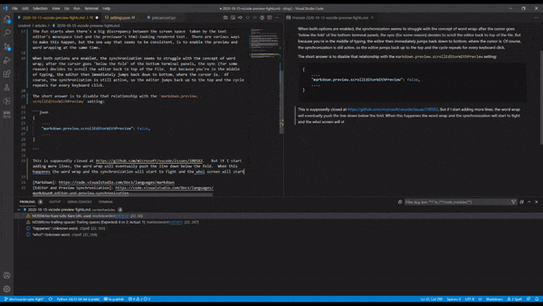

VSCode has a nice preview engine that allows a side-by-side of text and rendered-text. The feature is best documented in VSCode's native Markdown support help, but it's available for other languages and their plugins.
Within that help page is the section on Editor and Preview Synchronization. This is a nice feature but suffers from a locked up, sync-cycle battle between the editor pane and preview pane that leaves the user frustrated and fighting for control of the editor.
The fun starts when there's a big discrepancy between the screen space taken by the text editor's monospace text and the previewer's html-looking rendered text. There are various ways to make this happen, but the one way that seems to be consistent, is to enable the preview and word wrapping at the same time.
When both options are enabled, the synchronization seems to struggle with the concept of word wrap; after the cursor goes 'below the fold' of the bottom terminal panels, the sync (for some reason) decides to scroll the editor back to top of the file. But because you're in the middle of typing, the editor then immediately jumps back down to bottom, where the cursor is. Of course, the synchronization is still active, so the editor jumps back up to the top and the cycle repeats for every keyboard click.

This is seems like the same issue described in Visual Code issues #108582, but the comments suggest that people are still suffering from it. Until it's properly fixed, the best answer is to disable that feature by setting the markdown.preview.scrollEditorWithPreview setting to false:
{
....
"markdown.preview.scrollEditorWithPreview": false,
....
}